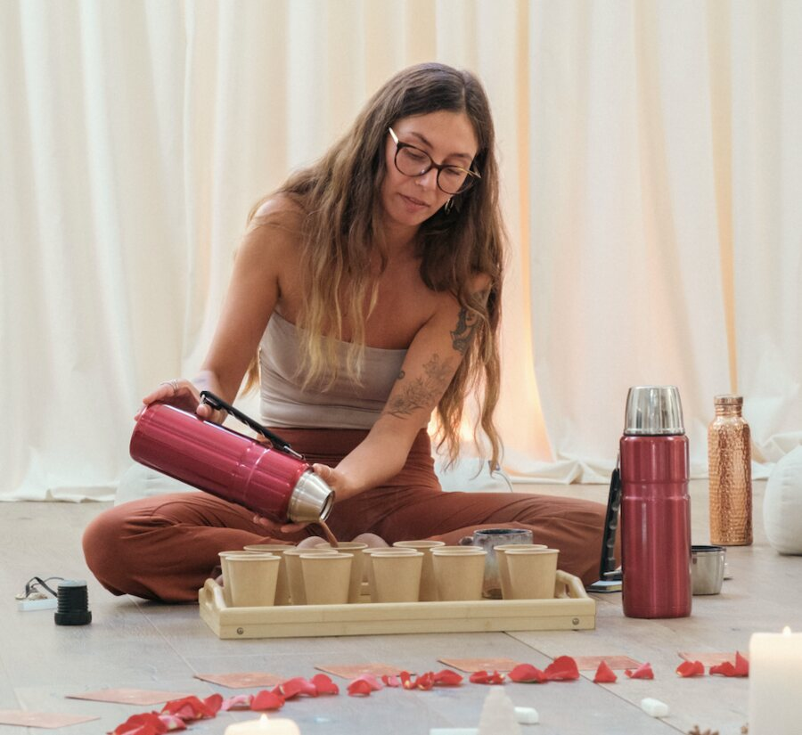

alex faraday
space holder · retreat leader · community builder
through cacao circles & retreats, i create safe, sacred spaces for women to be fully, unapologetically themselves.
for the women who are done pretending they're not weirdly human, and are ready to lean right in. and the women who know all the wisdom they need, comes from within.

pick a card
tap a card to turn it over
new here? start here.
a gift to welcome you into my world.
a relaxing guided meditation & a 17-page ceremonial cacao guide, free and forever yours.
get the free stuff
hi, i'm alex
i'm not a master, a teacher, or someone who is here to instruct you or "heal" you. i'm here to sit alongside you, guide you, and be a part of your journey.
the freedom to be your full, true self & find safety in sisterhood is something that so many of us are needing, and these two pillars are at the heart of everything i create.
say hi on instagram